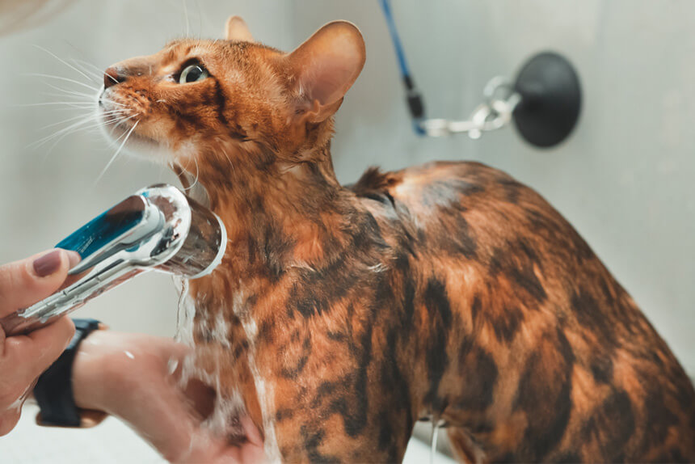
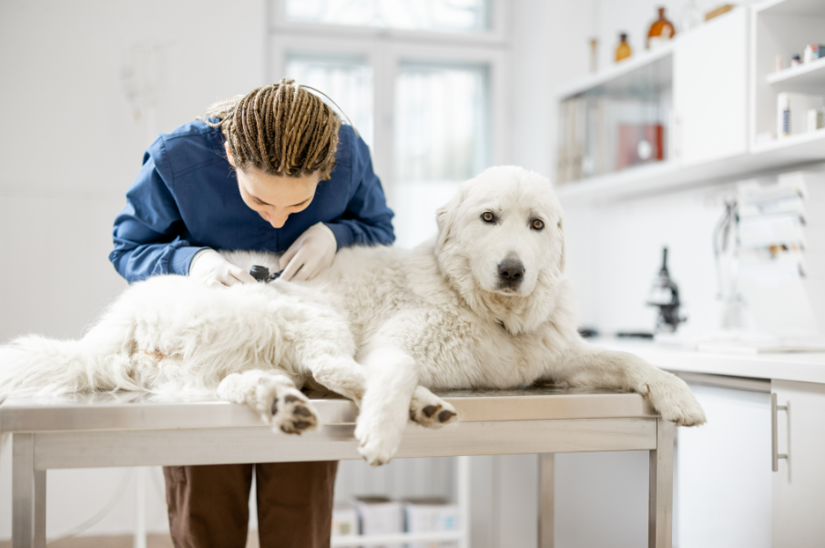

Inicio
Historias
Adopciones
Perdidos y Encontrados
Salud y Cuidados
Refugios
Salud y Cuidados
Baños

Enfermedad por arañazo de gato
¿Cómo aplicarle insulina a un perro con diabetes?
Síntomas de la enfermedad de la garrapata en perros
